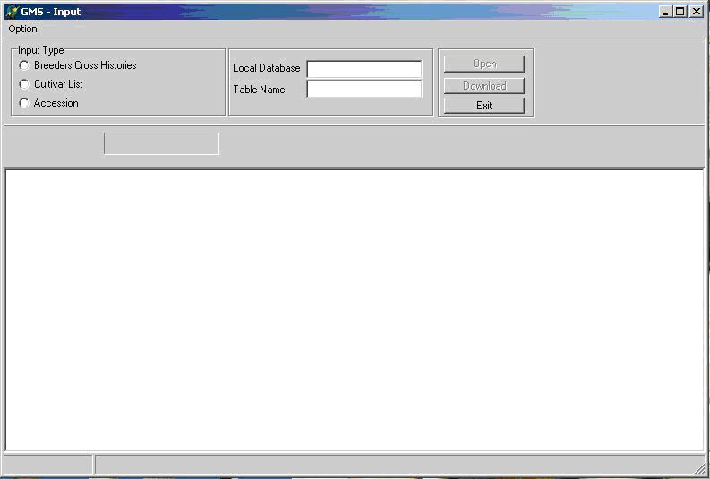
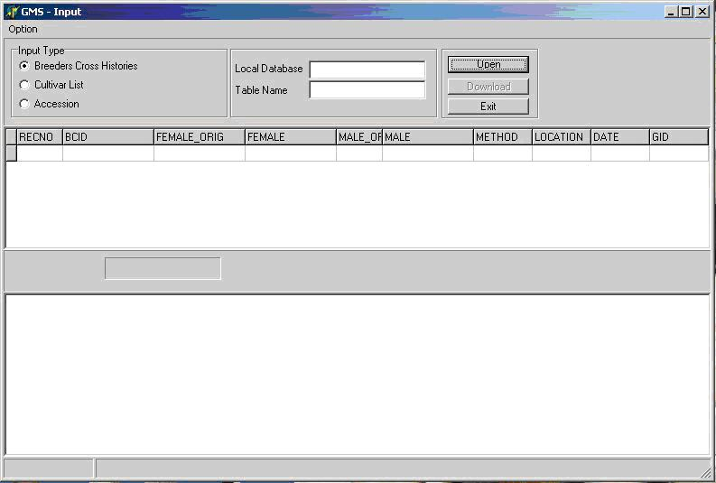
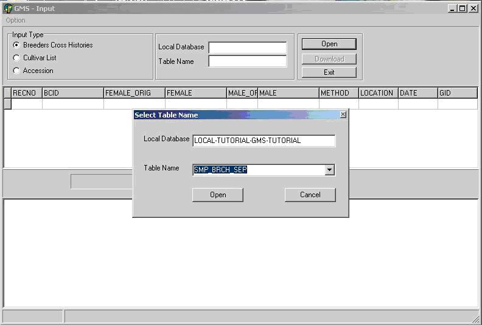
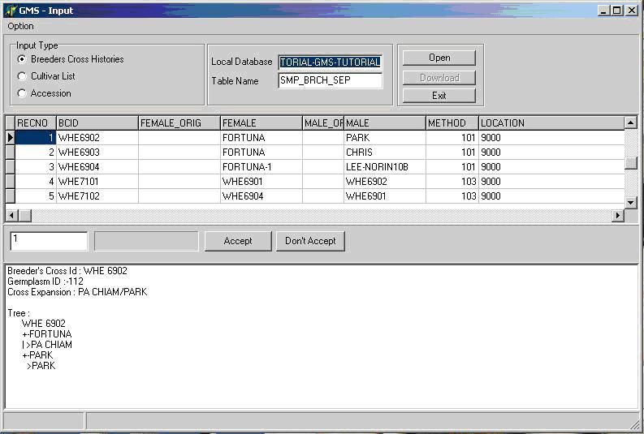
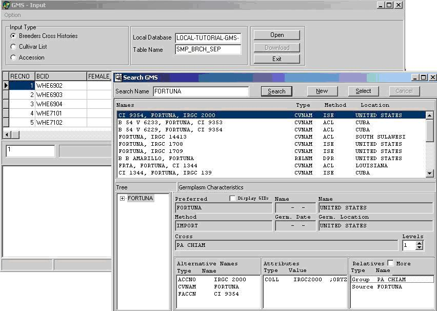
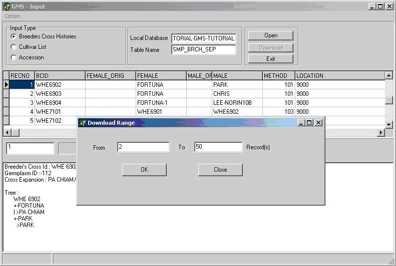

TDM GMS INPUT
From ICISWiki
A. APPLICATION PROGRAMS
1.APPLICATIONS OF THE GENEALOGY MANAGEMENT SYSTEM
C.G. McLaren, W. Eusebio
GMS INPUT APPLICATION
The GMSInput tool is an application for loading large volumes of historical germplasm data into GMS. The input tool loads cross, cultivar or accession data to a local database that can later be uploaded to the central database.
The raw pedigree data is entered into a temporary table in the local database. This requires direct manipulation of data in the temporary table and hence same facility in the RDMS program. There are three forms of temporary table depending on whether the input data come as separate female and male parent strings, as single purdy cross strings, or as accession data. Historical germplasm records can be loaded by GMSInput from any of the three input tables with the following table names. I_BCHIST for breeder’s cross histories, I_CULTLIST for cultivar lists, and I_ACCESSION of the accession data. Entries should be ordered chronologically so that when derivatives of early crosses are used as parents they are already available. The temporary tables can be deleted once the data are processed by GMSInput.
GMSInput will parse cross history strings of unknown crosses and, look for parents in the database. The user can control the selection of parents found in the database, and those not found are added with unknown source or origin. Derivative names of parents are recognized by looking for a cross number followed by letters and numbers separated by dashes. These derivatives are parsed back to the crosses where possible.
To speed up the loading of data into a local database, GMSInput stores the name and the GID of previous selections of parents made by the user in the INPUTLIST table in the local database. Whenever a parent of a cross that was previously selected is used as a parent in a succeeding crosses, GMS Input will first search for that parent in the INPUTLIST table and if found, GMS Input will automatically use the corresponding GID of that parent.
1.5.1 Breeder’s Cross Histories (Separate Parents)
GMSInput can process breeding records, which contain information on parentage and crossing methods. The input fields for this data type are:
| FIELD | COMPULSARY | DESCRIPTION | TYPE |
| BCID | Yes | Breeder’s cross identification | Character |
| FEMALE_ORIG | No | Female parent seed source or accession number | Character <100 bytes |
| FEMALE | Yes | Female Parent | Character |
| MALE_ORIG | No | Male parent seed source or accession number | Character |
| MALE | Yes | Male Parent | Character |
| METHOD | Yes | Crossing Method (ICIS method no.) | Number |
| DATE | No | Crossing date YYYMMDD | Long Integer |
| LOCATION | No | ICIS LocationID for the place where the cross was made | Long Integer |
| RECNO | Assigned | A sequential number ranging from 1 to total number of records used by GMSInput for index reference | Long Integer Primary key |
| GID | Assigned | GID number of a cross that GMSInput will assign during runtime | Long Integer |
If fields RECNO and GID are not present at the start of downloading GMSInput will add them. If they are present, RECNO must contain integers 1 to ‘number of records’ and GID should contain zeros. RECNO must be the primary key in ascending order.
1.5.2 Cultivar List
A list of mixed germplasm often occurs from evaluation studies or other activities. These may be derivative or generative germplasm and often have cross histories given in purdy notation. The input fields for this data type are:
| FIELD | COMPULSARY | DESCRIPTION | TYPE |
| NAME | Yes | Cultivar name | Character <100 bytes |
| NTYPE | Yes | Name type of cultivar name (ICIS fldno in UDFLDS table) | Number |
| DATE | Yes | Germplasm date YYYMMDD. May be zero if unknown. | Long Integer |
| LOCATION | Yes | ICIS Location ID for the place where the cross was made. May be zero if unknown. | Long Integer |
| METHOD | Yes | Crossing Method (ICIS method no. in METHODS table) | Number |
| CROSS | Yes | Purdy cross notation or cross string. May be blank if unknown | Character <100 bytes |
| Yes | Crossing date YYYMMDD. May be zero if unknown. | Long Integer | |
| ALTNAME | No | Alternate or other name | Character <100 bytes |
| ANTYPE | If ALTNAME is given | Name type of alternate or other name (ICIS fldno in UDFLDS table) | Number |
| RECNO | Assigned | A sequential number ranging from 1 to total number of records used by GMSInput for index reference | Long Integer Primary key |
| GID | Assigned | GID number of a cross that GMSInput will assign during runtime | Long Integer |
Again if the field RECNO and GID are not present in the table at the start, GMSInput will add them, but if they are parents, they must contain consecutive record numbers and zeros respectively and RECNO must be the primary key in ascending order.
1.5.3 Accession Data
Another type of information that GMSInput can handle is Accession data such the Maize Accession Database at CIMMYT and the IRGC Accession Database at IRRI. Because these databases have different formats the user has to do some pre-processing in order to download accession data to GMS.The fields used for the accession download are the following:
| FIELD | COMPULSARY | DESCRIPTION | TYPE |
| ACCID | Yes | Accession identifier | Character |
| CULTNAME | No | Cultivar name | Character |
| ALTNAME | No | Alternative name | Character |
| DERVNAME | No | Derivative or line name | Character |
| CROSS | No | Purdy cross history | Character |
| DNRNO | No | Donor number | Character |
| ALTERID | No | Altenate accession identifier | Character |
| SRCACC | No | Source Accession | Character |
| SPECIES | No | Species Name | Character |
| METHA | Yes | Accession method number | Number |
| METHS | Yes | Source method number | Number |
| AORIG | No | Accession origin number | Number |
| BORIG | No | Biological origin number | Number |
| ADATE | No | Accession date | Number |
| SDATE | No | Source date | Number |
| COLLID | No | Collector ID | Character |
| STATUS | No | Biological status number | Character |
| COLLENV | No | Collection environment number | Character |
| MISSCD | No | Mission code | Character |
| DNRID | No | Donor ID or Donor cooperator code | Character |
| DNRCTY | No | Country Code | Character |
| RECNO | Assigned | A sequential number ranging from 1 to total number of records used by GMSInput for index reference | Number Primary key |
| GID | Assigned | GID number of an accession that GMSInput will assign during runtime | Number |
1.5.3a Pre-processing Accession Data
Using the CIMMYT Maize Accession Database as an example. The user must have knowledge of the accession database in order to pre-process the input file into the I_ACCESSION table in order for the GMSInput to download the records correctly. The CIMMYT Maize Accession Database has the following data format:
| FIELD | DESCRIPTION | TYPE |
| ACCID | Accession identifier | Character |
| MISSCODE | Mission code | Character |
| COLLECTNO | Collector’s number | Character |
| ALTERID | Alternate accession identifier | Character |
| TAXNO | Species number | Number |
| CULTNAME | Cultivar name | Character |
| STAT | Biological status | Character |
| SOURCE | Source | Character |
| DCCODE | Donor Cooperators code | Character |
| DATERECD | Date received | Character |
| DATECOLL | Date of collection | Character |
| OISO | Origin Geographic code | Character |
| DISO | Donor Geographic code | Character |
| LAT | Latitude | Real |
| LON | Longitude | Real |
| ELEVATION | Elevation | Character |
| FAOTRUST | FAO in-trust | Character |
| LOCAT | Source location name | Character |
The steps in pre-processing the data are:
- Append records from the CIMMYT database with the following fields ACCID, CULTNAME, ALTERID, STAT, MISSCODE, COLLECTNO, DCCODE, DATERECD, DATECOLL to the GMSInput input table into fields, ACCID, CULTNAME, ALTERID, STATUS, MISSCDE, COLLID, DNRNO, ADATE, SDATE.
- Look up OISO code in the location abbrevation field of ICIS and enter the corresponding location number into BORIG. Similarly load DISO to AORIG.
- Look up LOCAT in the location name field of ICIS and if found put the LOCID in BORIG (First check the country agrees if BORIG is not null). If not found add a new location record to get a new LOCID.
- Copy BORIG to AORIG wherever the latter is null.
- Use the STAT, SOURCE and CULTNAME field to select a method number for each accession METHA and its source METHS.
- Transfer all accession number found in CULTNAME and ALTNAME to ALTERID.
- Set zero (“0”) to all remaining null records.
1.5.4 Starting GMSInput
Start GMSInput. Select GMSInput from the ICIS menu and the GMSInput startup window will appear (Figure 1.5.1).
The user must first click one of radio buttons in the “Input Type” panel (Figure 1.5.2) and select which input data type will be processed.
After selecting the input type, open the input table by clicking on the “Open” button. An open dialog box will appear (Figure 1.5.3), the user can type or use the lookup list box to select the input table which is located in the local database and click open. After opening the input table the user can then start processing the file by clicking on the “Download” button. At the start of the download GMSInput will run in “Step” mode this processes one record at a time. The user can validate if GMSInput has correctly parsed the record before moving to the next record. In “ Step” mode, the user has the chance to accept or reject the processed record (Figure 1.5.4).
GMSInput searches the central and local database for existing germplasm records that have been used as parents or sources in the new entries, it also searches the databases to see if a new cross exists. If it does a Search GMS window will appear similar to Figure 1.5.5 and the user can select from the list box the appropriate germplasm entry and then click Select, or create a new germplasm entry by clicking New.
GMSInput remembers the selections made during run and assumes that if the same name occurs later, the same selection will be made.
When the user is satisfied that the download is proceeding correctly he can switch to “RUN” mode to speed up the download. After accepting or rejecting the last record processed in “STEP” mode the user can click on the “Run” button shown in Figure 1.5.6 and the “Download Range” window will appear. The user can enter the range of records to be processed and click OK. After processing the records in “Run” mode the user can again choose whether to run in “Step” or “Run” mode or stop the download and resume later. If the user chooses to resume later, the list of previous selection of parents is lost and must be built up again during the subsequent run.""
Figure 1.5.1. GMS Input startup screen

Figure 1.5.2. Selecting Input Type

Figure 1.5.3. Opening an Input Table

Figure 1.5.4. GMSInput Running in Step Mode

Figure 1.5.5. Selecting an existing germplasm record

Figure 1.5.6. Specifying range of records for “RUN” mode



{kind=link}
{kind=link}
{kind=link}
{kind=link}
{kind=link}
{kind=link}